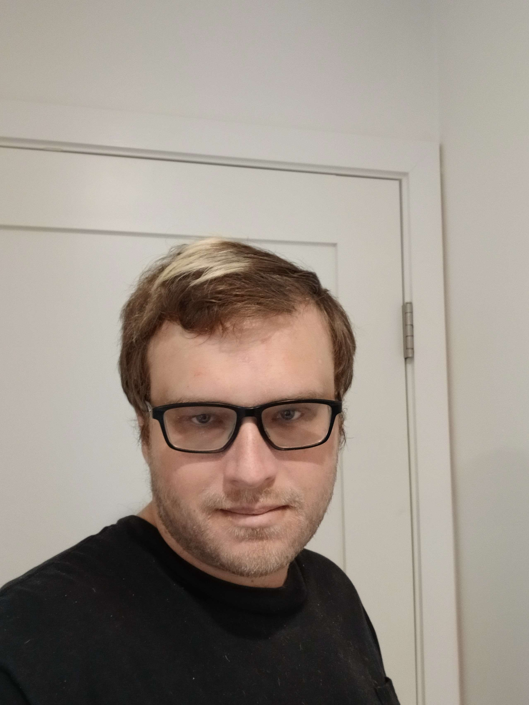

My name is Garrett.
I have been working in technology since 2019.
Areas I have worked in include ecommerce, hardware development, and research commercialization.
I also taught robotics, coding, and hardware prototyping to primary school students.
Skills
- Programming (C & C++, Python, (some) JavaScript, shell scripting)
- Electronics
- Computer-Aided Design (Solidworks, AutoCAD)
- 3D Modeling (Solidworks)
- Robotics
- System Design
- Technical Writing
- Business Development
- Sales
My Favorite Things Outside of Technology
- Music Composition: I write original compositions for ensembles + solo pieces I record myself.
- Martial Arts: Big fan of boxing and Muay Thai.
- Poetry: English Metaphysical poetry and classical Chinese poetry are my favorites.
- Cooking: I like spice.
Currently, I am a master's candidate at USC. I made this page for one of my classes.
Where I like to write and publish things about technology and related subjects.